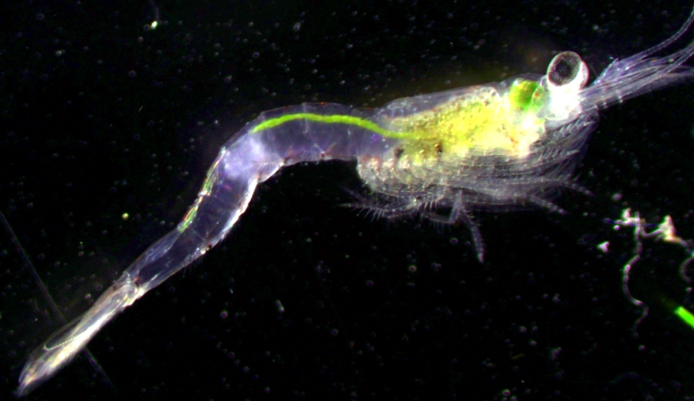

Habitat fragmentation of slimy sculpin in lakes
Question:
Do lake causeways and distance make a difference to populations of slimy sculpin in lakes?
Answer:
Not really.
- Slimy sculpin are panmictic throughout Lake Champlain, even across substantial dispersal barriers.
- Slimy sculpin show no indication of IBD across more 60+ km in Lake Champlain and 240+ km in Lake Ontario.
Read More:
Euclide, PT, Flores, NM, Wargo, MJ, Kilpatrick, CW, Marsden, JE. 2017. Lack of population genetic structure of slimy sculpin in a large, fragmented lake. Ecology of Freshwater Fish.


Mysis diluviana partial diel vertical migration (DVM)
Question:
Do all Mysis migrate to the surface every night? Or do some stay on the bottom?
Answer:
Some Mysis like to stay put.
Larger and fecund Mysis are more likely to stay on the bottom at night than smaller individuals.
Fatter Mysis are more likely to stay on the bottom at night than hungry Mysis.
Read More:
Euclide, PT, Hansson, S, Stockwell, JD. 2016. Partial diel vertical migration in an omnivorous macroinvertebrate, Mysis diluviana. Hydrobiologia. doi:10.1007/s10750-016-2982-5.
The effect of gut content on stable isotope analysis
Question:
Does the gut content of a organism bias stable isotope analysis?
Answer:
Nope.
- δ15N, δ13C, and C:N was the same for Mysis with evacuated guts and guts full of Artemia, Green Algae.
Read More:
Euclide, PT, Stockwell, JD. 2015. Effect of gut content on δ15N, δ13C, and C:N of experimentally- fed Mysis diluvaiana. Journal of Great Lake Research. 41: 926-929.

Impact of low quality diet on swimming performance and essential fatty acids (EFA)
Question:
Could cyanobacteria blooms limit fish fitness by limiting nutrition in a lake food web?
Answer:
Probably. At least a little bit.
Swimming performance was positively related to EFA.
Fish fatty acid content changes rapidly (within two weeks).
The interactions between EFA and swimming performance are complex, and can be contradictory.
Read More:
Manuscript in preperation.
Mysis density dataset
As stated above, Mysis are a common macro-zooplankton throughout North America. In addition to a large native range in Eastern North America, Mysis were purposefully added to many western lakes to boost sport fish productivity such as lake trout and kokanee including many lakes in Colorado. Because Mysis are a important source of food for fish and an important predator of zooplankton, Mysis density can be a important predictor of system productivity. However, documentation of Mysis density has been inconsistent and not easily accessible. Therefore, we have begun to assemble a central dataset of Mysis density data from across North America, though most our data is from the Great Lakes.
RShiny App: https://peter-euclide.shinyapps.io/Mysis_density_app/